How the feature works (read this first)
The upload page lives at /portal/lead-card-upload and is gated by the ocr-lead-upload
feature. A school admin drops one or more inquiry-card images (JPG / PNG / WEBP) or a PDF and clicks
Upload. The request persists the file(s) and rasterises any PDF pages synchronously, then queues
background jobs:
lead_image; the Upload History records a per-file outcome.ProcessLeadImage asks the model for card bounding boxes and creates one lead_card per detected card (whole-frame fallback if none found).ProcessLeadCard sends the cropped card to OpenAI vision and stores the extracted fields in ocr_payload.Lead Card.Each screenshot below pairs the browser
Interaction with what it is Showing and the matching DB check. The queue connection is
database, so jobs were drained with queue:work --queue=communications --stop-when-empty
after every upload. Tip: click any screenshot to view it full-size.
The lead_cards.outcome = 'created' value is unreachable
The pipeline works end-to-end, but every successful card — including ones that create a brand-new
contact — is recorded as outcome = 'matched', never 'created'. Across this run, 9
distinct contacts were created from lead cards, yet 0 cards were labelled created
(11 matched + 1 no_contact_details).
Root cause. ProcessLeadCard::resolveContact() sets the outcome from
$contact->wasRecentlyCreated. But ContactService::firstOrCreateContactByEmailOrPhone()
creates the contact via the CreateContact action (which returns an id) and then
re-queries it with Contact::where(...)->firstOrFail(). A query-hydrated model has
wasRecentlyCreated = false, so the "created" branch can never be taken.
Impact. The dedup logic itself is correct (no duplicate contacts are created), but operators
reading the lead_cards audit cannot distinguish a card that created a new lead from one that
matched an existing contact. Proven empirically below in G3 (a brand-new contact, created at the exact
job-completion instant, still reported matched).
Access & the upload form
Signed in as a Western Welding Academy SCHOOL_ADMIN. WWA's org (12) carries the
ocr-lead-upload feature, so the upload surface is reachable.
Feature gate ON — entry point present
/portal/contacts as the WWA admin.ocr-lead-upload gate passes.ocr-lead-upload + contact-management.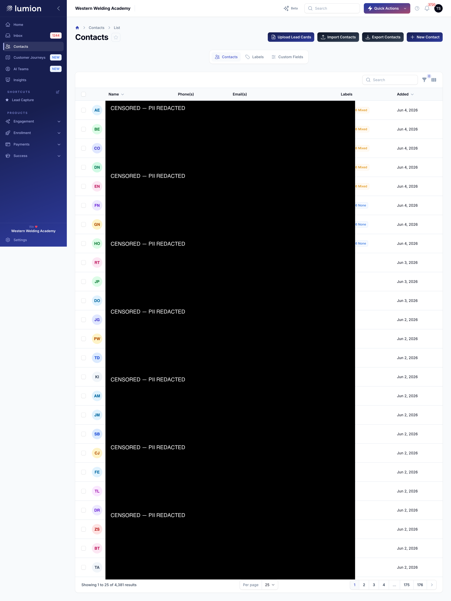
Empty upload form
/portal/lead-card-upload.lead_uploads / lead_images / lead_cards = 0; page 200, console clean.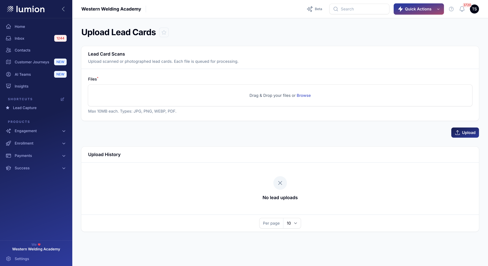
FilePond mechanism check
POST /livewire/upload-file → 200; the temp file appears in the component's data.files state.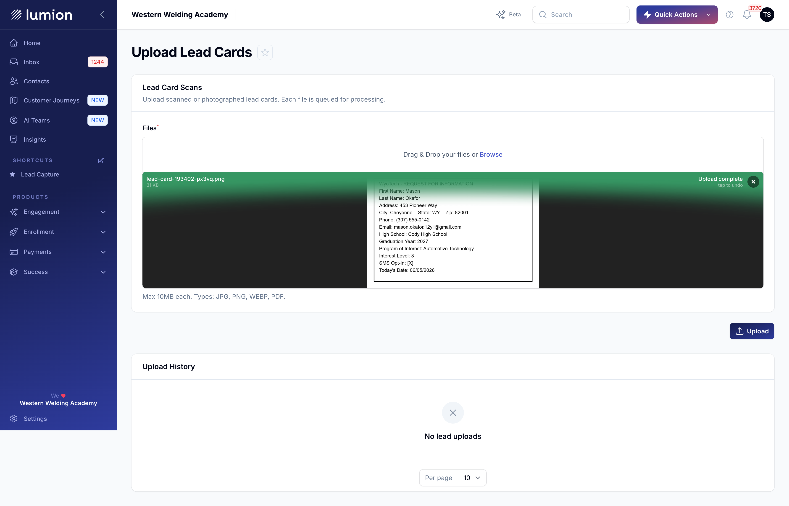
Uploads that produce cards & contacts
Sample cards were generated with the in-repo leadcards:generate-sample-card
command (machine-printed WyoTech-style inquiry cards). Each contact below was read straight off the card
by the model.
Single card — 1 file → 1 contact
lead_uploads method=manual, outcome succeeded; 1 lead_image (source_page NULL); 1 lead_card completed; contact 5076197 created, email + phone source=Lead Card. Note: outcome read back as matched despite the contact being brand-new — see the Finding.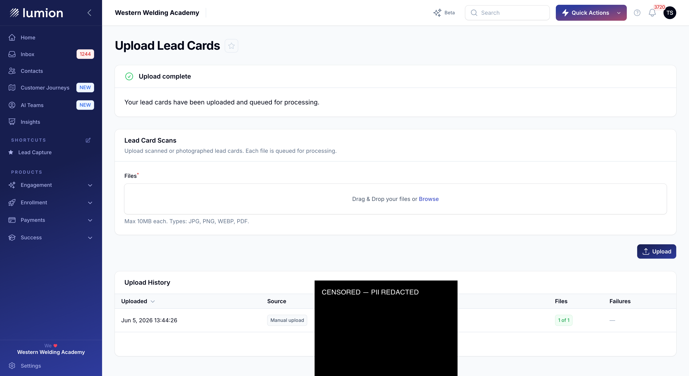
Multi-card image — 1 file → 4 contacts
lead_image → 4 lead_cards all completed, 4 distinct contacts (Mia Sullivan, Liam Halvorsen, Ethan Brooks, Caleb Halvorsen) matching the generated set.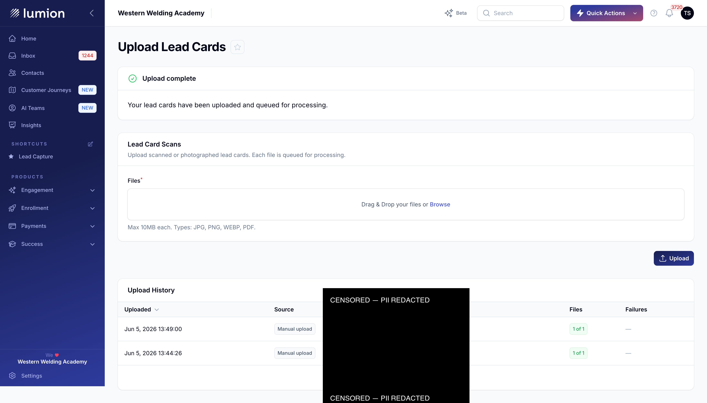
Multi-page PDF — 3 pages → 3 cards
lead_images with source_page 1 / 2 / 3 and the same source_file_index; 3 cards completed (Mason Brooks p1, Caleb Okafor p2, Ethan Nguyen p3).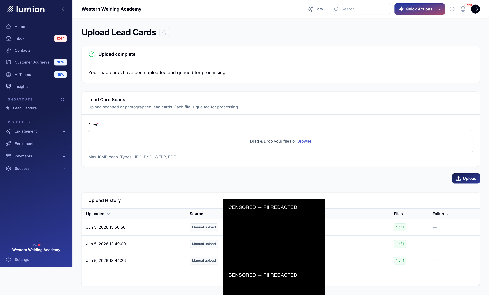
WEBP — mime-agnostic parity
file_outcomes mime=image/webp; 1 card completed, contact 5076205 created. Raster path is format-agnostic.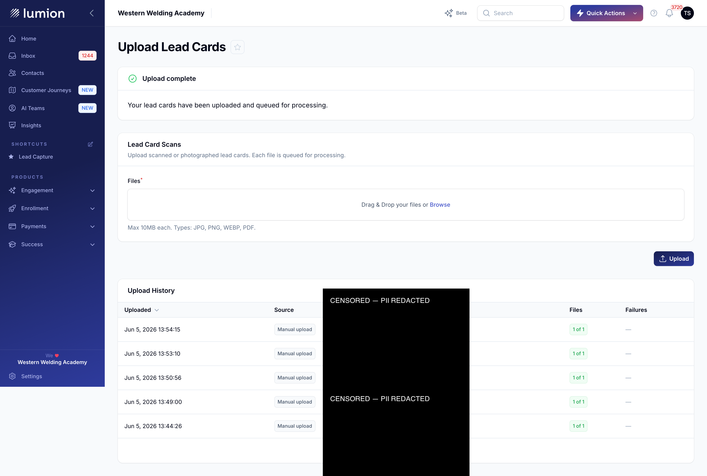
Contacts land & re-uploads dedupe
The cards above produced real contacts in WWA's contact list, and re-uploading a card that was already ingested reuses the existing contact instead of duplicating it.
Lead-card contacts in the list
/portal/contacts (sorted by Added).source = 'Lead Card'.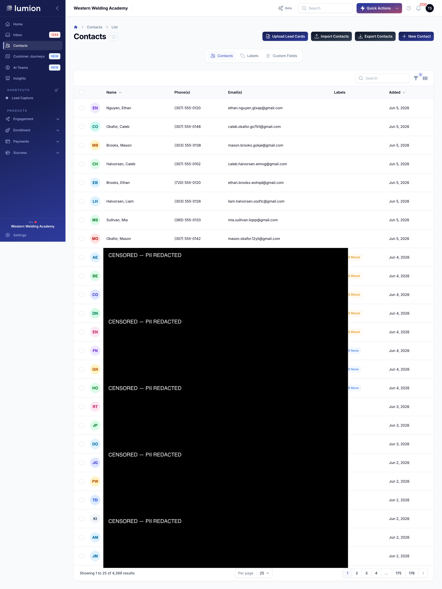
Re-upload — dedupe, no duplicate contact
contact_id 5076197; exactly one Mason Okafor contact exists across both cards. Dedup works (this is the only case where matched is truly correct).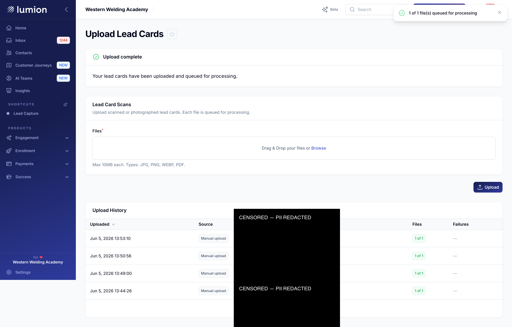
Anti-paths — bad input is handled cleanly
The handled failure modes: empty submit, unreadable PDF, a card with no contact details, a mixed good/bad batch, and client-side type / size rejection.
Submit with no files
lead_upload created (count unchanged at 5).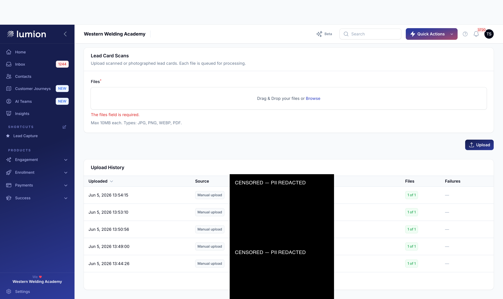
Corrupt PDF
bad.pdf whose bytes are not a real PDF.file_outcomes succeeded=false, failure_reason = pdf_rasterize_failed; 0 images, 0 cards.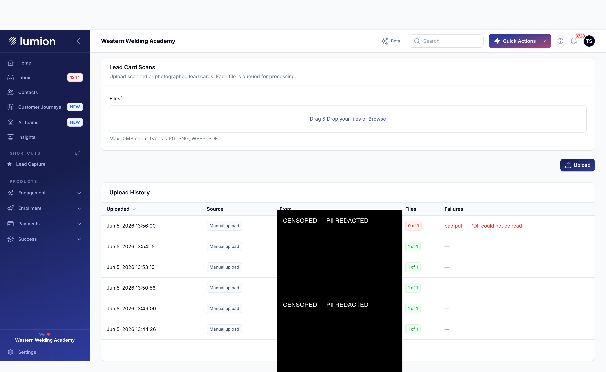
Non-card image (no contact details)
completed with outcome = no_contact_details and contact_id NULL (OCR found no email/phone). No contact is invented.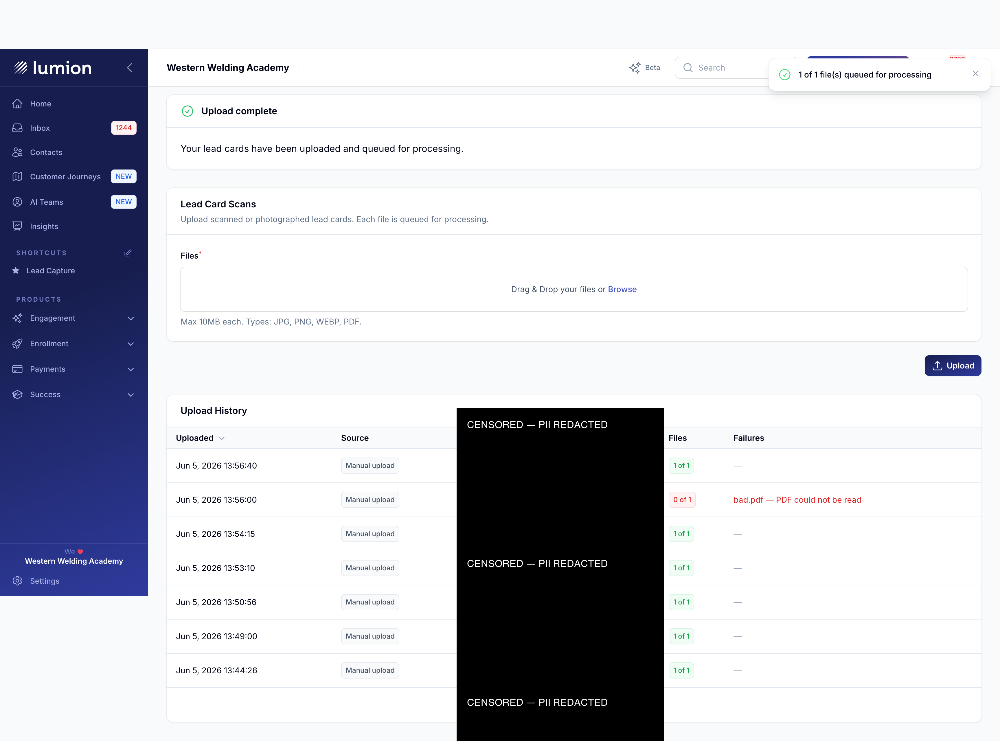
Mixed batch — one good, one bad
file_outcome succeeded, one failed; the PNG yields 1 image / 1 card, the bad PDF yields none.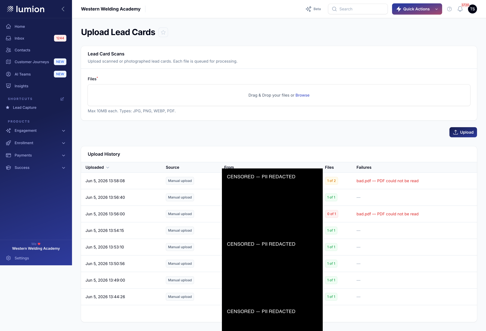
Wrong file type — rejected client-side
.txt file.Oversize file — rejected client-side
maxSize(10240)).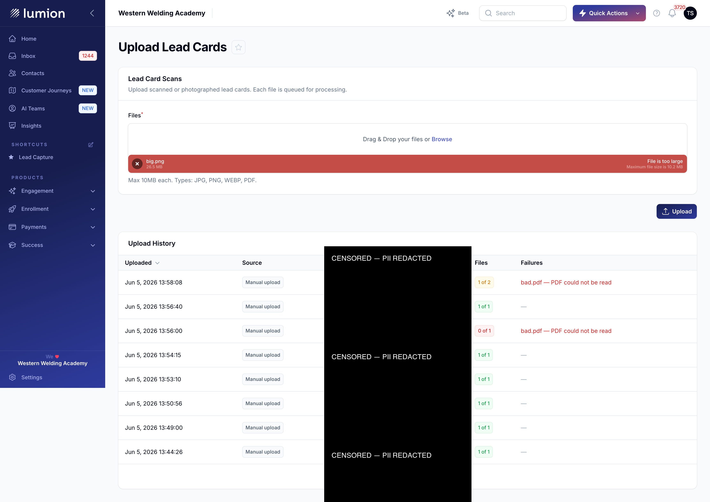
Feature gate — a school without the feature is denied
Logged in (isolated session) as an admin of National Welding Academy — org 28, which
does not carry ocr-lead-upload. The point is to prove the denial is the feature gate, not
an unrelated subdomain/auth failure.
Upload page → 403
/portal/lead-card-upload.OcrLeadUploadAccess gate's abort(403), not a subdomain mismatch.OcrLeadUploadAccess::enabledFor($user) === false (org 28 + natwelding lack the feature).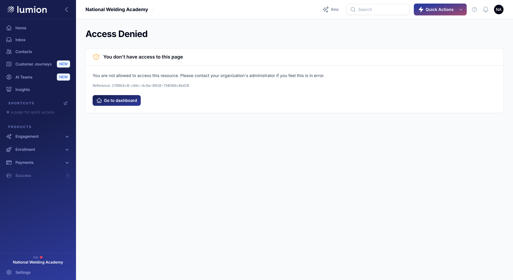
Contacts loads — but no upload entry point
/portal/contacts as the same natwelding admin.OcrLeadUploadAccess passes.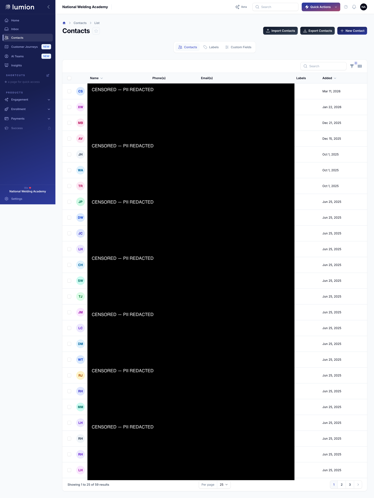
Outcomes verified in the database
Every upload was drained through the queue worker and then checked against the database —
not just visually. 0 new failed_jobs across the whole run (no OpenAI denials, no crashes).
| Test | Input | Result | DB evidence |
|---|---|---|---|
| G1 · Gate ON | — | Upload button visible pass | org 12 has ocr-lead-upload |
| G2 · Form | — | Empty form, no console errors pass | baseline counts 0 |
| G0 · FilePond | 1 PNG | File registers, temp upload 200 pass | data.files populated |
| G3 · Single card | 1 PNG (1 card) | 1 contact created pass outcome=matched | 1 img (page NULL), 1 card completed, contact 5076197, source Lead Card |
| G4 · Multi-card | 1 PNG (4 cards) | 4 contacts created pass | 1 img → 4 cards completed |
| G5 · PDF | 3-page PDF | 3 cards created pass | 3 imgs source_page 1/2/3, 3 cards |
| G8 · WEBP | 1 WEBP | 1 contact created pass | mime image/webp, 1 card completed |
| G6 · Contacts | — | 8 lead-card contacts listed pass | count 4,381 → 4,389 (+8) |
| G7 · Re-upload | same PNG | No duplicate contact pass | reuses contact_id 5076197; 1 Mason contact |
| A1 · No files | — | “files field is required” pass | no upload created |
| A2 · Corrupt PDF | bad.pdf | “PDF could not be read”, 0 of 1 blocked | pdf_rasterize_failed, 0 cards |
| A3 · Non-card | solid image | Card completes, no contact pass | no_contact_details, contact_id NULL |
| A4 · Mixed batch | PNG + bad.pdf | 1 of 2; only PNG yields a card pass | 1 img / 1 card, PDF 0 |
| A5a · Wrong type | .txt | FilePond rejects blocked | not synced; no upload |
| A5b · Oversize | 26.5 MB PNG | FilePond rejects (10.2 MB cap) blocked | not synced; no upload |
| A6 · Feature gate | natwelding admin | 403 + button hidden, contacts loads blocked | enabledFor()=false, org 28 |